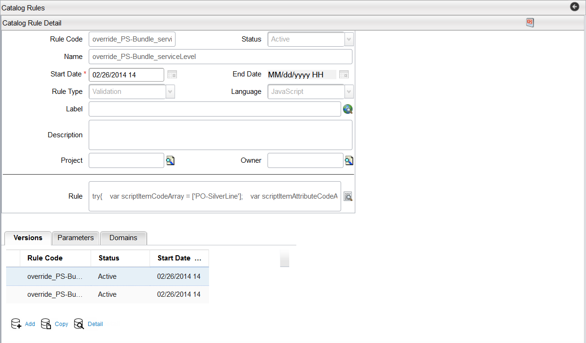
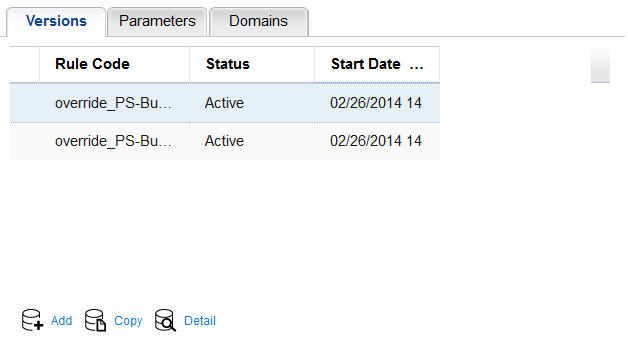
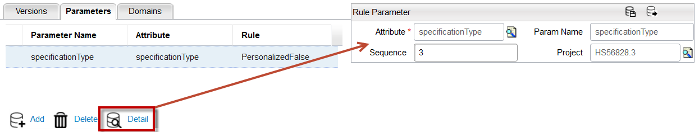

To create a new catalog rule in Catalog Designer, follow these steps:
| Field | Description |
|---|---|
| Rule Code | Enter a unique code that identifies the rule. |
| Status | Click the drop-down menu and select one of the current object statuses that applies to your rule. |
| Name | Enter a name for the rule you are creating. The rule name must be in lowercase letters. This field is for internal use when designing your catalog model. This field is not supported by language translation. |
| Start Date | This field represents the date that the rule commences and defaults to the current date. To make changes, click the Calendar icon and select the date that you want.. |
| End Date | This field denotes thee date that the rule ends. Click the Calendar icon |
| Rule Type | Click the drop-down menu and select one of the following rule types:
|
| Return Type | Click the drop-down menu and select one of the following return types from the list:
|
| Label | This field denotes the visual (user-friendly) name for this rule, which is used in the application user interface. This field is a translational string that supports language translations (refer to Velocity Studio's Translation Element for more details). |
| Description | This field contains a description of the rule. |
| Project | If you have already opened a project, this field's contents appear in grey. To see details about your project, click theMagnifying Glassbutton next to this field. |
| Owner | This field indicates information about the owner of the project. |
| Rule | This field displays the rule script. Proceed to the next step on filling in this field. Note that Catalog is case sensitive. If the rule calls for a Catalog code, then the case must match. |

The Versions tab provide information about the selected rule. It shows a summary of the rule name, status, and start date.

The rule parameter tab provides information about the parameter name, attribute, and rule name.
To view the Rule Parameter dialog, click the Detail button and then specify whether the rule script contains parameters.

The Rule Parameter dialog contains the following fields:
| Fields | Description |
|---|---|
| Attribute | This field denotes the attribute type (that is, String, Boolean) defined in the Attribute Type object. Enter the Attribute type and then click the Magnifying Glass button to perform a search. |
| Param Name | The field contains the parameter name. |
| Sequence | This filed contains the parameter's sequence position in the rule. |
| Project | Enter the rule in this field and then click the Magnifying Glass button to perform a search, which displays objects containing the selected rule within the Catalog. |